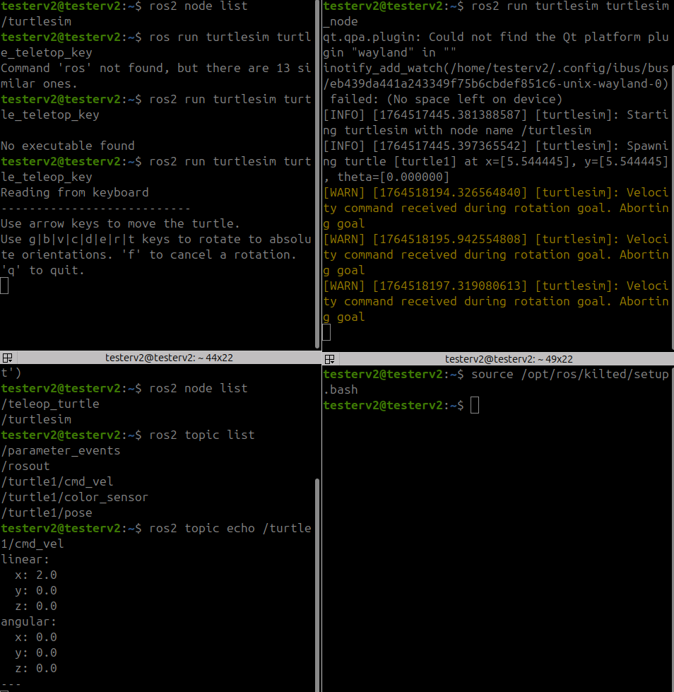

Tutorial 1 – Getting Started With ROS2
This tutorial guides you through ROS2 installation, verifying your setup, and understanding core ROS2 concepts. ROS2 can can be deployed using various methods however today we will only be looking at Installing it on ubuntu noble(lts 24.04) via the debian package
1. What is ROS2?
ROS2 (Robot Operating System version 2) is a flexible framework for writing robot software. It provides tools, libraries, and conventions to simplify the task of creating complex robotics behavior.
2. Installing ROS2 (Jazzy/Noble)
If you prefer to build from source you can follow the instructons here:
Don't worry if you are unfamiliar with robotics or Linux...
-
First let's make sure the system supports the correct character encoding:
$ locale # Look for UTF-8. If not present: $ sudo apt update && sudo apt install locales $ sudo locale-gen en_US.UTF-8 $ sudo update-locale LC_ALL=en_US.UTF-8 LANG=en_US.UTF-8 # Then verify again
The libries required for the installation are from the Ubuntu Universe repository so we must add this before starting the installation
$ sudo apt install software-properties-common
$ sudo add-apt-repository universe
ROS2 is constantly changing by the vast community so to get
the newest features and fixed we must install the latest update:
uses these commands to get the most updated files.
To ge teh installion we need to curl so if you dont have it installed instll using this command
$ sudo apt update
$ sudo apt install curl -y
Now lets serach for the latest installation file download it an installation
$ export ROS_APT_SOURCE_VERSION=$(curl -s https://api.github.com/repos/ros-infrastructure/ros-apt-source/releases/latest | grep -F "tag_name" | awk -F\" '{print $4}')
$ curl -L -o /tmp/ros2-apt-source.deb "https://github.com/ros-infrastructure/ros-apt-source/releases/download/${ROS_APT_SOURCE_VERSION}/ros2-apt-source_${ROS_APT_SOURCE_VERSION}.$(. /etc/os-release && echo ${UBUNTU_CODENAME:-${VERSION_CODENAME}})_all.deb"
$ sudo dpkg -i /tmp/ros2-apt-source.deb
3. Test Your Installation
Once you have successfully installed ROS2 we'll start the turtle simulation
- tell the system where to find ROS2 instrutcion set
source /opt/ros/jazzy/setup.bash - start the turtle simulation with the command